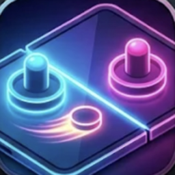

Air Hockey Duo
Neon air hockey built for iPhone Duo. Free vs the computer; Pro adds 2-Player and more. Plays on any iPhone.
Need help?
Email wk.official98@gmail.com and include your iPhone model and iOS version. I usually reply within a few days.
How to play
- Unfold your iPhone Duo flat in landscape. You (Player 1) have the charging-port half; the computer or Player 2 has the other half.
- Tap Start Match, then drag your mallet to hit the puck into the other goal.
- Pick the mode, goals to win and match time on the start card. Options with a lock are part of Pro.
Free and Pro
- Free: play against the computer on the Cyberpunk Neon table, first to 3 or 5 goals, in 1, 3 or 5-minute matches.
- Air Hockey Duo Pro (one-time purchase, no subscription): 2-Player, Solo Two-Thumb, the Wood & Ice table, first to 7 or 10 goals, and 10-minute and Open matches.
Common questions
I bought Pro. How do I get it on a new iPhone or after reinstalling?
Tap Unlock Pro, then Restore Purchase. Use the same Apple Account you bought it with.
Can I get a refund?
Refunds are handled by Apple. Request one at reportaproblem.apple.com.
My purchase says it's waiting for approval.
If Ask to Buy is on, Pro unlocks as soon as the family organizer approves it.
Why did my game pause?
Bending the hinge pauses the match. Open the phone flat again and play resumes after a 3-2-1 countdown.
Can I play when the phone is closed?
Yes. Close it fully and the match continues on the cover screen as a single-screen table.
How do I play against a friend?
Choose Mode → 2-Player (part of Pro). Each player drags their own mallet on their own half.
Does it work without a foldable?
Yes. On any iPhone it's one landscape table.
No sound or vibration?
Check Sound and Haptics in the game's Settings, and that your iPhone isn't in Silent mode.